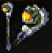
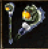
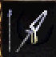
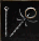
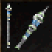

힘의 지팡이
공격력 (작은/큰 몬스터) 9 / 9
클래스 마법사
한손/양손 한손
옵션 STR+3, 근거리 대미지+3, SP-2
인챈트 +6까지 안전하게 가능
손상 여부 손상되지 않음
설명 인챈트+1 당 타격치 +1 식 증가

마나의 지팡이
공격력 (작은/큰 몬스터) 7 / 7
클래스 마법사
한손/양손 한손
옵션 근거리 명중-3, MP 흡수, SP+1
인챈트 +6까지 안전하게 가능
손상 여부 손상되지 않음
설명 인챈트+1 당 타격치 +1 식 증가
수정 지팡이
공격력 (작은/큰 몬스터) 1 / 1
클래스 마법사
한손/양손 한손
옵션 MP 회복+10
인챈트 +6까지 안전하게 가능
손상 여부 손상되지 않음
설명 인챈트+1 당 타격치 +1 식 증가

베레스의 지팡이
공격력 (작은/큰 몬스터) 2 / 3
클래스 마법사
한손/양손 한손
옵션 SP+2, MP 회복+10
인챈트 -
손상 여부 손상되지 않음
설명 인챈트+1 당 타격치 +1 식 증가

바포메트의 지팡이
공격력 (작은/큰 몬스터) 15 / 14
클래스 마법사
한손/양손 한손
옵션 근거리 대미지+5, 근거리 명중+8, 마법 발동: 레이징 이럽션
인챈트 +7부터 SP+1 추가되어 인챈트 +9까지 SP+3 상승
손상 여부 손상되지 않음
설명 인챈트+1 당 타격치 +1 식 증가, 공격 시 일정 확률로 레이징 이럽션이 발동,

얼음여왕의 지팡이
공격력 (작은/큰 몬스터) 8 / 9
클래스 마법사
한손/양손 한손
옵션 근거리 명중+5, 근거리 대미지+1, 마법 발동 : 콘 오브 콜드
인챈트 +1 당 발동 확률이+2% 상승
손상 여부 손상되지 않음
설명 인챈트+1 당 타격치 +1 식 증가, 공격 시 일정 확률로 콘 오브 콜드가 발동